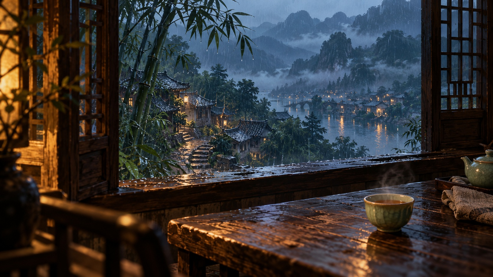
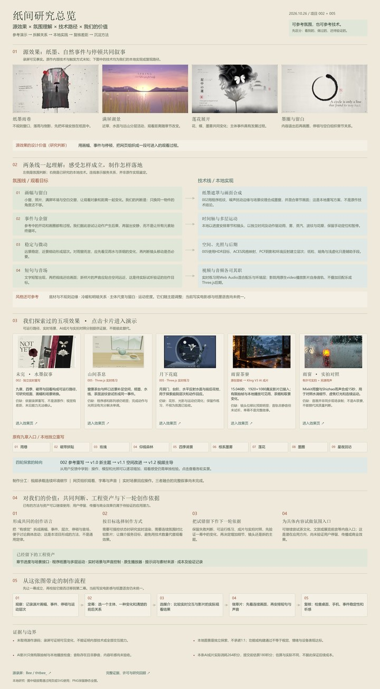

纸面 → 窗口 → 环境 → 留白
纸上雨巷转为拍立得，后续森林与湖景展开为满屏环境，章节之间也会留出空处。观看距离本身参与了叙事。
RESEARCH NOTES / 2026.10.26
一段画面，为什么让人愿意停留？
从纸张、雨巷和墨迹边框出发，经过两项实时场景练习，我们把关注点慢慢移向空间、事件、停顿与声音。这一页，把做过的效果与学到的方法放在一起。
沿着效果，回看研究当前阶段：一幕样片已接入，制作方法仍在验证。

原创首帧 → Kling V3 成片。主动播放，默认静音。
进入完整观看页 ↗
放大阅读全图 ↗00 / THE STARTING POINT
依据原演示录屏的连续抽帧，得到以下观察。录屏中的具体实现方式与隐藏能力，仍无法确认。
纸上雨巷转为拍立得，后续森林与湖景展开为满屏环境，章节之间也会留出空处。观看距离本身参与了叙事。
近处草叶、水面、薄雾与远山承担不同的变化。许多段落中，场景内部的活动比镜头移动更突出。
短句分批出现、退出；莲花之后留白，墨圈随后逐步画出。停顿给下一件事留出了位置。
参考来源：Bee 的原始演示录屏 ↗最初提供的转述帖 ↗未取得原作源码；下方《未完》是我们的独立重写。
01 / WHAT WE MADE
截图来自各版实际页面；AI 样片使用原创首帧作封面。每项都保留可进入的演示，并写明观察与局限。
5项记录
02 / HOW THE QUESTION CHANGED
保留每次尝试的价值，也记录它没有解决的部分。功能可用与画面动人，需要分别判断。
有了主体和操作，空间与变化仍显单薄。
构图和体积有所推进，连续事件仍需加强。
两张为不同版本的实际页面，展示方向变化；不代表同机位或逐像素比较。
03 / WHAT WE TAKE FORWARD
以下是这一轮形成的研究判断。它们需要在后续作品中继续检验，还不能称为成熟的风格系统。
一条更清楚的制作分工
视频承载连续环境与时间细节
网页组织进入、停留、切换与声音
实时场景承接需要回应操作的部分
目前已分别验证这些载体的局部能力，尚未完成三者融合的完整叙事。
04 / EVIDENCE & LIMITS
生成成功、浏览器能播与作品达到预期，是不同层面的结果。当前样片的检查范围如下。
| 观察项目 | 已有依据 | 仍有边界 |
|---|---|---|
| 连续画面 | 查看0、5、10、14秒抽帧；雨水、茶烟与取景有变化。 | 抽帧不等于逐帧验收，完整的微风因果链尚未确认。 |
| 实际播放 | 本地浏览器已播放真实 MP4；15.046秒、1920×1080、24fps。 | 未完成多浏览器、实体手机与长期性能验证。 |
| 声音 | 影片含非静音 AAC 音轨，网页默认静音，可主动开启。 | 尚未试听，不能确认雨声、风声及情绪是否符合意图。 |
| 移动画幅 | 390×844窗口中，默认保留完整16:9画面。 | 竖屏会留黑边；铺满模式会裁切边缘。 |
| 风格统一 | 已有纸墨重写、实时茶庭与写实雨窗三种探索。 | 写实电影感与纸墨语言尚未统一，不能宣称原作1:1复刻。 |
窄屏可左右滑动，查看完整对照。
原创首帧由内置图像生成工具创建，再作为图生视频输入。两次视频任务分别获得确认，失败后没有自动追加新任务。
当前网页播放本地素材，观看时不会调用生成服务。30秒扩展脚本仍是储备方案，并未生成或实现。
这是提交前的目标，不能替代对实际成片的判断。
抽帧中镜头位移比预期更明显；“微风带来连续后果”的目标仍需完整观看与听感确认。
原参考：Bee 原始录屏 ↗。仅据可见画面研究，未取得原作源码；独立重写未使用原视频作为网页播放素材。
AI 茶寮：本次原创首帧与 Kling V3 成片；影片声音来自生成文件。实时练习的程序配乐复用项目002原创《纸上归途》，未混入 AI 影院。
实拍对照：Mixkit《Window on a rainy day》 ↗，采用 Stock Video Free License ↗。雨声另取自 Shizhao 的 SV100344.ogg，PD-author ↗，经剪辑合成，不是同步现场录音。